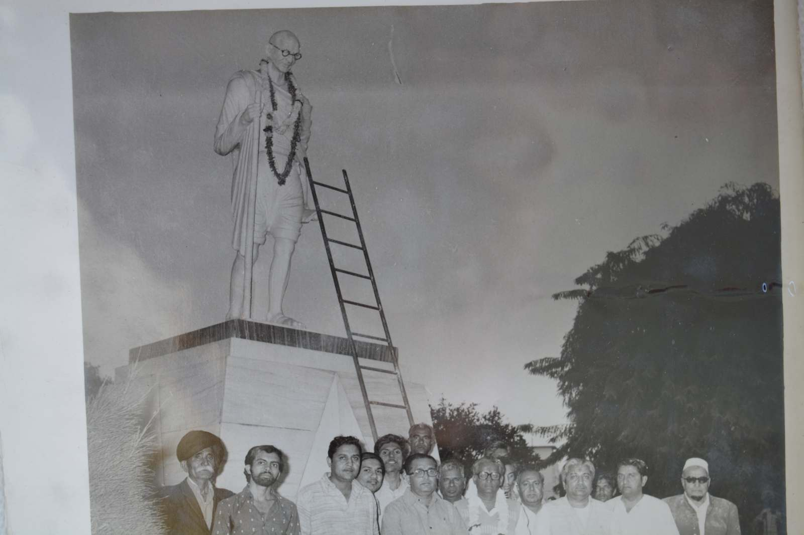
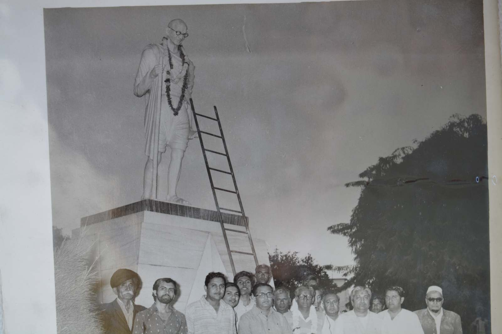
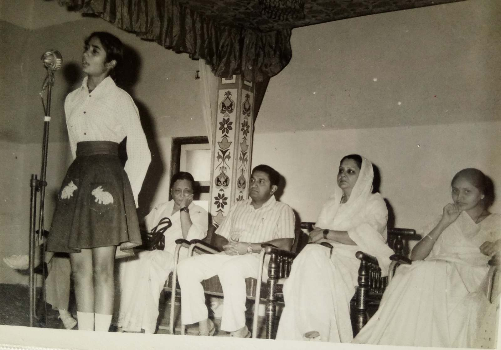
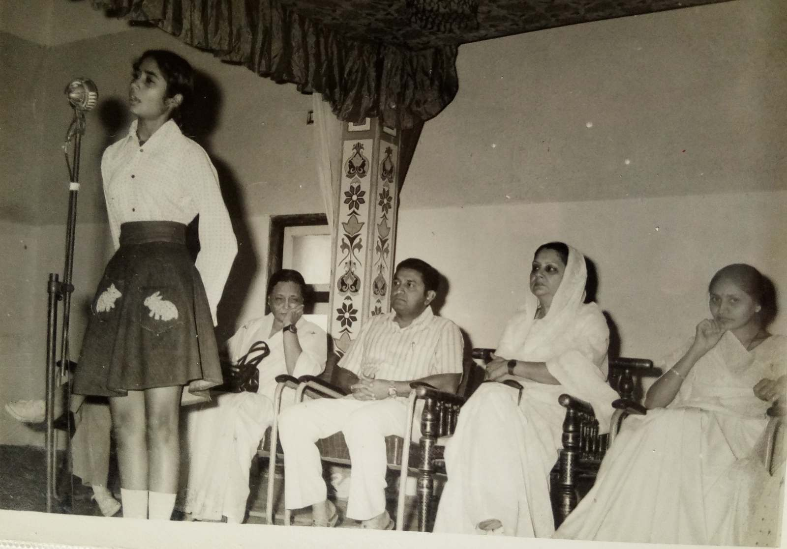
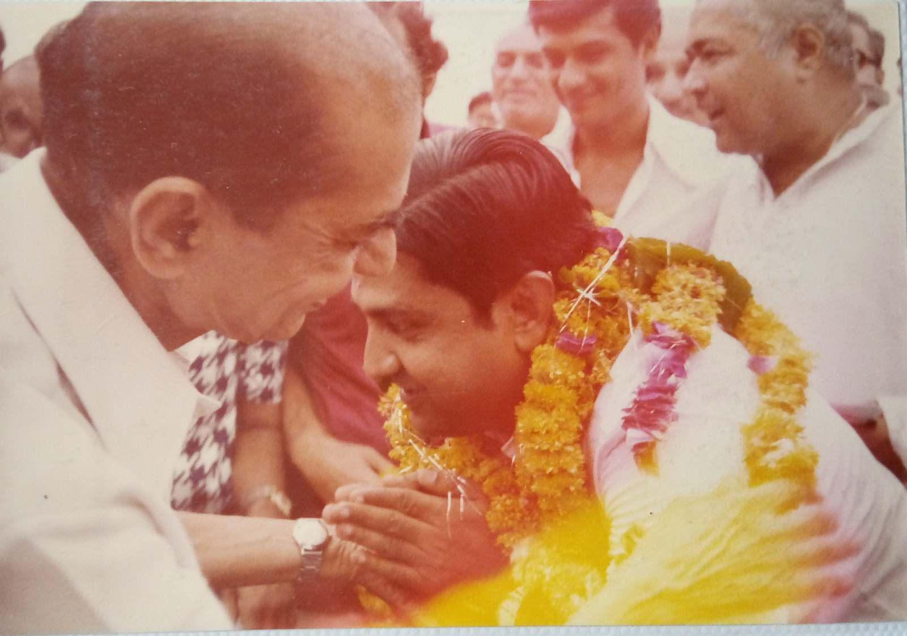
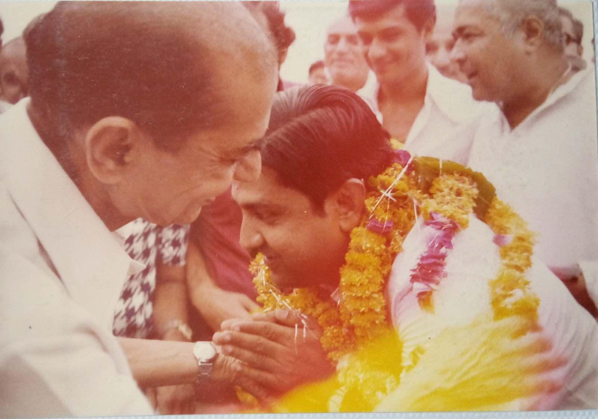

શ્રી અરવિંદભાઈ મણીઆર જનકલ્યાણ ટ્રસ્ટ
રાજકોટના વિકાસના શિલ્પી અને સ્વપ્નદૃષ્ટા, ભૂતપૂર્વ ધારાસભ્ય, મેયર, સમાજિક તેમજ રાજકીય અગ્રણી અને રાજકોટ નાગરિક સહકારી બેંક લિ.ના પ્રમુખ અરવિંદભાઈ મણીઆરની સ્મૃતિમાં તેઓએ પ્રગટાવેલી સેવા અને સમર્પણની જ્યોતને પ્રજ્વલિત રાખવા, લોકકલ્યાણ માટેની તેમની ભાવનાઓને અનુરૂપ વિવિધ પ્રકારની સમાજોપયોગી તેમજ સેવાકીય પ્રવૃત્તિ ના ઉદ્દેશ અને કાર્યો કરવાના ધ્યેય સાથે શ્રી અરવિંદભાઈ મણીઆર જનકલ્યાણ ટ્રસ્ટની રચના ઓક્ટોબર ૧૯૮૩ થી કરવામાં આવી. સ્થાપનાથી આજ સુધી ટ્રસ્ટ દ્વારા સામાજીક કાર્યોના વિવિધ પ્રકલ્પો સફળતાપૂર્વક ચાલી રહ્યા છે.


શ્રી અરવિંદભાઈ મણીઆર
વ્યક્તિગત જીવન :-

जोग लगन ग्रह बार तिथि सकल भए अनुकूल ।
શ્રી અરવિંદભાઇનો જન્મ તા. 5 ઓક્ટોબર 1933, ગુરુવાર, વિક્રમ સંવત 1990, અશ્વિન માસ (આસો), કૃષ્ણ પક્ષ, દ્વિતીયા તિથીના દિવસે થયો. એમના પિતા શ્રી રતિલાલભાઇ અભેચંદભાઇ મણીઆર એક ધર્મનિષ્ઠ, કુટુંબવત્સલ, રમતવીર, નીડર, પ્રબુદ્ધ અને સ્નેહાળ વ્યક્તિ ઉપરાંત એમના સમયના બ્રીટીશ એજન્સીના પ્રતિષ્ઠિત વકીલ હતા.
શ્રી અરવિંદભાઇનો ઉછેર સંયુક્ત કુટુંબમાં થયો. સંયુક્ત કુટુંબની એક વિશિષ્ટતા છે. સંયુક્ત કુટુંબમાં બાળકને સાચવી, સંભાળી, સમજી, અનહદ પ્રેમ આપનારા, સંસ્કારોનું સિંચન કરનારા વડિલો ઘરમાં જ હોય છે. જેથી બાળક ક્યાંય કોઇ જાતનો અભાવ નથી અનુભવતુ. બધા સાથે હળીમળીને રહેવાનું, જતું કરવાનું, એડજસ્ટ થઇ જવાનું, વહેંચીને ખાવા-પીવા-વાપરવાનું..... સહજ શીખી જાય છે.
શ્રી અરવિંદભાઇનું ધોરણ એક થી ચાર સુધીનું પ્રાથમિક શિક્ષણ ઘરની નજીક સદરની મ્યુનિસિપલ શાળા નં. 8 માં થયું. પિતાશ્રી રતિલાલભાઇ એક શ્રીમંત, પ્રતિષ્ઠિત વકીલ હતા. રાજકુમાર કોલેજમાં પણ શ્રી અરવિંદભાઇનો અભ્યાસ કરાવી શકત. તાલુકા શાળામાં અભ્યાસ કરવાથી એમનામાં સરકારમાન્ય શિક્ષણ ઉપરાંત જનસામાન્ય સાથે સહજતાથી - સરળતાથી એકરૂપ થવાના, એમને સમજવાના સંસ્કાર પ્રાપ્ત થયા.
શ્રી અરવિંદભાઇનો ધોરણ 5, 6 અને 7 નો અભ્યાસ શ્રી રામકૃષ્ણ આશ્રમ, રાજકોટની વિદ્યાસંસ્થામાં રહીને થયો. આશ્રમમાં રહેવાથી સ્વાવલંબીતા, નિયમિતતા, શિસ્ત, સાદાઇ, સરળતા, ધર્મપરાયણતા...... જેવા ગુણોનો વિકાસ થયો અને સંતોના સતત સાંનિધ્યથી જીવન આધ્યાત્મિક બન્યું. શ્રી અરવિંદભાઇને જીવનમાં ક્યારેય પણ, ક્યાંય પણ મળનાર વ્યક્તિને એ પોતાના પરમ હિતેચ્છુ અને આત્મીય સ્વજન લાગ્યા છે. એનો પાયો અહીં રામકૃષ્ણ આશ્રમમાં નખાયો. આશ્રમમાં સંતોના સહવાસમાં રહીને सर्वस्य चाहं हृदि सन्निविष्टो। આત્મસાત કર્યું. માત્ર 'હું અને મારૂં' છોડીને 'તું પણ મારો ભાઇ' આ પાઠ પાકો થયો.
શ્રી અરવિંદભાઇએ માધ્યમિક શિક્ષણ રાજકોટની ચૌધરી હાઇસ્કુલમાંથી પ્રાપ્ત કર્યું. આ સમય દરમિયાન અભ્યાસ ઉપરાંત રમતગમતમાં પણ એમને વિશેષ રુચિ નિર્માણ થઇ. કબડ્ડી, વોલીબોલ, ટેનિસ જેવી રમતો એમની પ્રિય રમતો હતી. એમાં અનેક સિદ્ધિઓના પ્રતિકરૂપે ટ્રોફીઓ પણ પ્રાપ્ત કરેલી.
શ્રી અરવિંદભાઇ રમતગમત - sportsman spirit ને કારણે હાર - જીતને એક સહજ સ્વાભાવિક સ્વરૂપે સ્વીકાર કરતા થયા. હારથી નાસીપાસ થવાને બદલે હારનાં કારણો શોધીને, સમજીને, ભૂલો સુધારીને જીત માટે ફરી તૈયાર - તત્પર થવાની માનસિકતા તૈયાર થઇ. રમતગમતથી બધાની સાથે મળીને, સાથે રાખીને કામ કરવાની - team spirit ની ભાવના નિર્માણ થઇ. કબડ્ડી જેવી રમતે મરણનો ડર કાઢી નાખ્યો. કબડ્ડીની રમતમાં ખેલાડી મરી જાય તો પાછો જીવતો પણ થાય અને બમણા વેગથી, ઉત્સાહથી ફરી જીતવા માટે રમવા લાગે. રમતગમતથી ધીરજ, એકાગ્રતા, ખેલદિલી અને નીડરતા જેવા ગુણો પણ ખીલે. રમતગમતને કારણે શ્રી અરવિંદભાઇમાં આ બધા ગુણો સહજ અને સ્વાભાવિક હતા.
ઉપરાંત રમતગમતના કારણે શરીર પણ નિરોગી, બળવાન બન્યું. शरीरमाद्यं खलु धर्मसाधनम् । શરીર તંદુરસ્ત હોય તોજ ધર્મ, અર્થ, કામ, મોક્ષ આ ચારે પુરુષાર્થ પ્રાપ્ત કરી શકાય અને તંદુરસ્ત શરીરમાં જ સ્વસ્થ - નિરોગી મન રહી શકે.
આમ શ્રી અરવિંદભાઇએ શાળાના અભ્યાસ દરમિયાન જ શિક્ષણની સાથે સંસ્કાર અને સ્વાસ્થ્ય બંને પ્રાપ્ત કરીને તેજસ્વી - ઉજ્વળ કારકિર્દીનો મજબૂત પાયો નાખ્યો.
શ્રી અરવિંદભાઇએ શાળાનું શિક્ષણ પૂરું કરીને રાજકોટની એચ. એન્ડ એચ. બી. કોટક ઇન્સ્ટીટ્યુટ ઓફ સાયન્સ જે ટુંકમાં 'કોટક સાયન્સ કોલેજ' ના નામથી ઓળખાય છે એમાં પ્રવેશ મેળવીને બી.એસસી.ની ડીગ્રી સારા ગુણાંકથી પ્રાપ્ત કરી.
એમના કોલેજકાળ દરમિયાન 'રાષ્ટ્રીય સ્વયંસેવક સંઘ'ની શાખા સાથે જોડાયા. સંઘના સ્વયંસેવક તરીકે નિયમિત શાખામાં જઇને સંઘ શિક્ષા વર્ગની પ્રથમ વર્ષ અને દ્વિતીય વર્ષની તાલીમ પણ પ્રાપ્ત કરેલી જેથી રાષ્ટ્રભાવના એમના જીવનનું અભિન્ન અંગ બની ગઇ.
રાષ્ટ્ર એટલે; એક ભૂમિ ખંડ, એની સંસ્કૃતિ - પરંપરા અને એમાં રહેતી જનતા આ બધું સાથે મળીને રાષ્ટ્ર બને.
1. ભૂમિ :-

माता भूमि: पुत्रोऽहं पृथिव्या:।
नमो माता पृथिव्यै नमो माता पृथिव्यै।।
ભૂમિસૂક્ત - અથર્વવેદ
આપણે ભૂમિની વંદના માતાના રૂપમાં કરીએ છીએ. આપણા માટે તો સમસ્ત વસુંધરા માતાના રૂપમાં છે પરંતુ એમાં ભારતમાતાનું કોઇ વિશેષ સ્થાન છે. જે કૃપા વિધાતાએ ભારતમાતા ઉપર કરી છે એ અદ્ભુત છે, અને એ માત્ર ભારતની ભૂમિને જ પ્રાપ્ત છે. ભારતની ભૂમિને વિભિન્ન પ્રકારનું સૃષ્ટિ સૌંદર્ય, વિલક્ષણ સમૃદ્ધિ મળેલા છે. ભારત દેશ આરંભથી 'सोने की चिड़िया' કહેવાતો, સમૃદ્ધ અને સંપન્ન રહ્યો છે. આ ભૂમિની સુરક્ષા સુનિશ્ચિત થવી જોઈએ.
2. સંસ્કૃતિ - પરંપરા :-

આ દેશમાં વેદ કાળથી આજ સુધી એક અત્યંત વિકસિત સંસ્કૃતિ - પરંપરા છે, જેને જોઇને પૂરા વિશ્વનું મસ્તક પ્રેમથી, શ્રદ્ધાથી, ભાવથી, આદરથી ઝુકી જાય છે. ભારતીય સંસ્કૃતિએ એવા સપૂત સંસારને આપ્યા જેમણે પોતાના ચારિત્રના બળથી, જ્ઞાનના બળથી વિશ્વને ચમત્કૃત અને ઉપકૃત કર્યું છે. એટલે જ ભગવાન મનુએ હિમાલયની ટોચ ઉપરથી સમગ્ર વિશ્વને આહ્વાન કર્યું :
एतत् देश प्रसूतस्य सकाशाद् अग्रजन्मनः ।
स्वं स्वं चरित्रं शिक्षेरन् पृथिव्यां सर्वमानवाः ।।
સમગ્ર સંસારના લોકો આવો અને જીવન કેમ જીવવું જોઇએ એ આ ભૂમિથી શીખો. આ ભૂમિએ સમગ્ર વિશ્વને જ્ઞાન પ્રદાન કર્યું છે. આ સંસ્કૃતિ - પરંપરાનું રક્ષણ થવું જોઈએ.
3. જનતા :

જનતાની સેવા આ સંસ્કૃતિ - પરંપરાના જીવન મૂલ્યોને અનુરૂપ થવી જોઈએ. તો જ ભારત, ભારત તરીકે ટકી શકે. વિકસિત ભારતનું નિર્માણ થઇ શકે. સમૃદ્ધ ભારત, વિકસિત ભારત નિર્માણ કરવા માટે વેદ, ગીતા, રામાયણ, મહાભારત, કવિ કાલિદાસ, ભવભૂતિ..... ની પરંપરાને જ આધારભૂત બનાવવી જોઈએ. એ આપણી સંસ્કૃતિના આધારસ્તંભ છે. સંસ્કૃત ભાષા, વેદ, મહાભારત, ગીતાનું જ્ઞાન તમામ ભારતીયને મળવું જોઈએ. જે દેશની જનતા પોતાની સંસ્કૃતિ અને પરંપરાથી વિમુખ થાય છે એ પોતાની અસ્મિતા, ગૌરવ અને અસ્તિત્વ પણ ખોઇ બેસે છે.
રાષ્ટ્રની આ તમામ વિશેષતાઓને ધ્યાનમાં રાખીને બંકીમબાબુએ वंदे मातरम् ગાયું.
આ ત્રણે વાતો માટે સતત પુરુષાર્થ કરતા રહેવાને જ રાષ્ટ્રભાવના કહેવાય. શ્રી અરવિંદભાઇ આજીવન રાષ્ટ્રભાવનાથી ઓતપ્રોત રહ્યા અને આજીવન 'રાષ્ટ્રીય સ્વયંસેવક સંઘ' સાથે જોડાયેલા રહ્યા.
શ્રી અરવિંદભાઇએ બી.એસસી.નો અભ્યાસ પૂર્ણ કરીને દાદા અભેચંદભાઇ અને પિતાશ્રી રતિલાલભાઇના વકીલાતના વ્યવસાયમાં જ કારકિર્દી ઘડવાનું નક્કી કર્યું. રાજકોટમાં કાયદાશાસ્ત્રનો પ્રારંભિક અભ્યાસ ચાલતો હતો એ સમયગાળામાં પિતાશ્રીને paralysis નો એટેક આવ્યો.
શ્રી અરવિંદભાઇ અત્યંત ધર્મનિષ્ઠ હતા. ભારતીય સંસ્કૃતિમાં ધર્મ એટલે કોઇ આસ્થા વિશેષની - religion ની વાત નથી. ધર્મ એ જીવનની આચારસંહિતા છે. સરળ ભાષામાં ધર્મ એટલે આચાર, વિચારનું પાલન. સવારે ઉઠીને સ્નાનાદિ નિત્યકર્મ કરીને, નિયમિત સંધ્યા વંદન, પૂજા પાઠ કરવા સાથે સત્ય, અહિંસા, અસ્તેય, બ્રહ્મચર્ય, અપરિગ્રહ, શૌચ, સંતોષ, તપ, સ્વાધ્યાય અને ઇશ્વર પ્રણિધાન પૂર્વકના જીવન વ્યવહાર આ ધર્મની પ્રાથમિક આવશ્યકતા છે જેનાથી ચિત્ત શુદ્ધ થતું જાય છે, જીવનમાં સાત્વિકતા આવે છે.
ધર્મની વ્યાખ્યા મનુ સ્મૃતિમાં धर्मो रक्षति रक्षित: કરી છે. મનુ સ્મૃતિ એ સમાજ વ્યવસ્થાની આચાર સંહિતા છે. અહીં ધર્મનો અર્થ વ્યક્તિના પોતાના કર્તવ્ય, ફરજ, નૈતિકતા, સદ્ વ્યવહાર.... વગેરે છે. જે લોકો પોતાના કર્તવ્ય, ફરજ, નૈતિકતા, સદ્ વ્યવહારની રક્ષા કરે છે એટલે કે પાલન કરે છે એમની રક્ષા સ્વયં થાય છે.
ટુંકમાં ધર્મ એટલે જીવનની આચારસંહિતા. ધર્મ એટલે ફરજ.
શ્રી અરવિંદભાઇ પિતાશ્રીની માંદગી દરમિયાન સતત એમની સાથે રહ્યા. સમયસર દવાઓ આપવી, દૈનંદિન કર્મ કરાવવા, રોજના સમાચારપત્રો વાંચી સંભળાવવા, કૌટુંબિક - સામાજિક - ધાર્મિક - રાજકીય વાતો અને ચર્ચા સાથે બેસીને કરવી....... ટુંકમાં પથારીવશ પિતાશ્રીને કોઇ વાતનું ઓછું ન આવે એની કાળજી પૂરા સમર્પણભાવથી અને પૂરી નિષ્ઠાથી કરી. ખૂબ લાંબો સમય, પિતાશ્રીની વિદાય સુધી એમના અંતેવાસી બનીને રહ્યા. સ્વયં સ્વીકારેલી એ ફરજ ધર્મનિષ્ઠાથી જ આવે.
શ્રી અરવિંદભાઇએ કાયદા વિદ્યાશાખાનો ઉચ્ચ અભ્યાસ અમદાવાદની એલ. એ. શાહ લો કોલેજમાંથી કર્યો. આ કોલેજના અધ્યાપકો શ્રી અરવિંદભાઇથી ખૂબ જ સંતુષ્ટ અને પ્રભાવિત હતા.
અમદાવાદના અભ્યાસ દરમિયાન અન્યાયનો મક્કમતાથી પ્રતિકાર કરવાની એમની ક્ષમતા અને નિર્ભયતાનો બધાને પરિચય થયો. અમદાવાદમાં કાયદા વિદ્યાશાખાનો અભ્યાસ પૂરો કરીને અનુભવ માટે મુંબઈના પ્રખ્યાત કાયદાશાસ્ત્રી શ્રી ચુનીભાઈ જોબનપુત્રા સાથે કામ કર્યું અને ખુબજ થોડા સમયમાં શ્રી અરવિંદભાઇ ટેક્સેશન ક્ષેત્રમાં નિપુણ થઇ ગયા.
વડિલબંધુઓના માર્ગદર્શન મુજબ એમણે રાજકોટમાં કરવેરાના સલાહકાર તરીકે સ્વતંત્ર વ્યવસાય શરૂ કર્યો.
માનવ જીવનને સુખી અને સફળ બનાવવા માટે ૠષિઓએ આપણને ધર્મ, અર્થ, કામ અને મોક્ષ આ ચાર પુરુષાર્થ આપ્યા. આ ચાર પુરુષાર્થ જીવનમાં સાકાર કરવા જીવનના સમયના ભાગ પાડ્યા. બ્રહ્મચર્યાશ્રમ, ગૃહસ્થાશ્રમ, વાનપ્રસ્થાશ્રમ અને સંન્યાસાશ્રમ. It's a time management.
શ્રી અરવિંદભાઇએ જીવનનો એક પડાવ બ્રહ્મચર્યાશ્રમ પૂરો કર્યો અને તા. ૨૦ જાન્યુઆરી ૧૯૫૯, મંગળવાર, વિક્રમ સંવત ૨૦૧૫, પોષ માસ, શુક્લ પક્ષ, એકાદશીના શુભ દિને હંસિકાબેન સાથે લગ્ન કરીને ગૃહસ્થાશ્રમમાં પ્રવેશ કર્યો.
માતા પિતા તુલ્ય હંસિકાબેન અને શ્રી અરવિંદભાઇના ગૃહસ્થાશ્રમ માટે શું કહેવું ?
सानन्दं सदनं सुताश्च सुधियः कान्ता प्रियंभाषिणी
सन्मित्रं सुधनं स्वयोषिति रतिः आज्ञापराः सेवकाः ।
आतिथ्यं शिवपूजनं प्रतिदिनं मिष्टान्नपानं गृहे
साधोः सङ्गमुपासते हि सततं धन्यो गृहस्थाश्रमः ॥
આ સુભાષિતને શત પ્રતિશત ચરિતાર્થ કરનાર આ યુગલને નમસ્કાર જ થઇ શકે.
આપણે શાળાના પ્રાથમિક શિક્ષણ દરમિયાન એક જ વરસમાં બે વરસનું શિક્ષણ સાથે લેતા વિદ્યાર્થી જોયા છે. એક જ વરસમાં ધોરણ બીજું અને ત્રીજું સાથે કર્યું હોય કે ધોરણ ત્રીજું અને ચોથું સાથે કર્યું હોય એવી તો અસંખ્ય વ્યક્તિ મળશે. પરંતુ શ્રી અરવિંદભાઇએ ગૃહસ્થાશ્રમ, વાનપ્રસ્થાશ્રમ અને સંન્યાસાશ્રમ ત્રણે એક સાથે કર્યા.
જીવનના છવ્વીસમા વરસથી પચાસમાં વરસ સુધી ગૃહસ્થાશ્રમમાં નોકરી - વ્યવસાયની શરૂઆત કરીને એમાં પ્રગતિ કરતા જવાનું છે. લગ્ન કરીને પત્નિ, બાળકોને સાચવવાના - સંભાળવાના છે. બાળકો મોટા થતાં જાય એમ એમના ઉચ્ચ શિક્ષણની વ્યવસ્થા કરવાની છે. સંતાનો માટે યોગ્ય પાત્ર શોધીને વિવાહ કરી દેવાના છે. કુટુંબના વડિલો - માતા, પિતાની ઉંમર વધતી જાય એમ એમની શારીરિક અને માનસિક કાળજી રાખવાની જવાબદારી ગૃહસ્થાશ્રમીની છે.
એકાવનમા વરસથી પીંચોતેરમા વરસ સુધી વાનપ્રસ્થાશ્રમમાં કુટુંબની આર્થિક, સામાજિક જવાબદારી પુત્રોને સોંપતા જઇને સમાજસેવાનું કામ કરવાનું છે.
અને પીંચોતેરમા વરસ પછી સ્વયંની સ્વયં સાથે ઓળખાણ કરવાનો સમય છે. આત્મસ્વરૂપને જાણીને સ્વસ્વરૂપમાં સ્થિત થવાનું છે. એ સમયગાળો બહારથી જોનારને, અન્ય વ્યક્તિને નિવૃત્તિ લાગે છે. ખરેખર તો જે ક્ષણથી સ્વયંને જાણવાની પ્રક્રિયા શરૂ થશે એ જ ક્ષણથી મુક્તિ તરફ આગળ વધવાનું શરૂ થાય છે. મુક્તિનો બીજો કોઇ અર્થ જ નથી.
निरोधोऽस्यानुशयनमात्मनः सह शक्तिभिः ।
मुक्तिर्हित्वान्यथारूपं स्वरूपेण व्यवस्थिति ।।
શ્રીમદ્ ભાગવત. ૨/૧૦/૬
મારા તમામ ભ્રમ નીકળી જાય અને જેવો હું છું; મારું વાસ્તવિક સ્વરૂપ ધ્યાનમાં આવે, चिदानंद रूपः शिवोऽहम् शिवोऽहम् । એ જ મુક્તિ છે.
શ્રી અરવિંદભાઇ છવ્વીસ થી પચાસ વરસની ઉંમરમાં ગૃહસ્થાશ્રમ, વાનપ્રસ્થાશ્રમ અને સંન્યાસાશ્રમ ત્રણે શ્રી અરવિંદભાઇ છવ્વીસ થી પચાસ વરસની ઉંમરમાં ગૃહસ્થાશ્રમ, વાનપ્રસ્થાશ્રમ અને સંન્યાસાશ્રમ ત્રણે એક સાથે જીવી ગયાં. જો શીખતા અને સમજતા આવડે તો આ મહામનવે આપણને Art of living અને Art of leaving બંને શીખવ્યું છે.
શ્રી અરવિંદભાઇનું સહકારી પ્રવૃત્તિમાં યોગદાન :-

વિશ્વમાં ત્રણ પ્રકારની અર્થવ્યવસ્થા છે.
1. ભારતીય અર્થવ્યવસ્થા
2. મૂડીવાદી (Capitalist)
3. સમાજવાદી (Socialist)
ભારતમાં વર્ણવ્યવસ્થા મુજબની અર્થવ્યવસ્થા હતી. ભારતીય અર્થવ્યવસ્થાને પહેલાં અંગ્રેજોએ અને સ્વતંત્રતા પછી કોમ્યુનીસ્ટ અને કોંગ્રેસની વિચારધારાએ ખલાસ કરી.
મૂડીવાદમાં 'મહેનત મજૂરની અને નફો માલિકનો' એ વિચારસરણી છે.
અને
સમાજવાદમાં 'શક્તિ મુજબ કામ અને જરૂર મુજબ દામ' આ સિદ્ધાંત છે.
મૂડીવાદ અને સમાજવાદ બંનેમાં How to make work honorable and how to make work pleasurable ? આ મોટી સમસ્યા છે. આ બંનેમાં incentive - પ્રેરણાનો પ્રશ્ન નિર્માણ થયો છે.
આ પરિસ્થિતિનો ઉકેલ સહકારી ક્ષેત્રથી મળી શકશે. સહકારી ક્ષેત્રથી વ્યક્તિ અને સમાજનો simultaneous વિકાસ શક્ય છે.
શ્રી અરવિંદભાઇ મણીઆર 'મૂઠી ઊંચેરા માનવી' હતા. ખરેખર તો એ મહામાનવ હતા. સમાજના કોઇ વિશેષ કાર્ય, કોઇ વ્યવસ્થા, કોઇ બદલાવ માટે ઇશ્વર પોતાના અંશને જ મોકલે છે. એ સંત, સંન્યાસી કે ગૃહસ્થ પણ હોય. ભારતમાં સ્વતંત્રતા પછી ભાંખોડિયાભર ચાલતા સહકારી ક્ષેત્રને નવયૌવન આપવા ઇશ્વરે શ્રી અરવિંદભાઇ મણીઆરને મોકલ્યા હોય એમ લાગે. સહકારી ક્ષેત્રની બેંકો માટે શ્રી અરવિંદભાઇ મણીઆર દેવદૂત બનીને આવેલા.
સહકારી બેંકોમાંથી ધીરાણ લીધા પછી કોઇ ભરપાઈ ન કરે તો કોર્ટમાં દીવાની દાવો દાખલ કરવા સિવાય બીજું કંઈ થઇ શકતું ન'તું. એ કેસ કોર્ટમાં વરસો સુધી ચાલે જ રાખે. પરિણામે સહકારી ક્ષેત્રની બેંકોમાં થાપણ વધુ અને ધીરાણ મર્યાદિત રહેતું જેથી વ્યાજના ભારથી જ સહકારી બેંકો તૂટી જતી. આ પરિસ્થિતિમાં શ્રી અરવિંદભાઇ મણીઆરે સહકારી ક્ષેત્રની બેંકોને એક દિશા આપી, પ્રગતિ માટેની વ્યવસ્થા આપી, ધીરાણની સુરક્ષાના નિયમોનું અભેદ્ય કવચ આપ્યું અને બેંકના દરેક ડીપાર્ટમેન્ટ માટે ચેક-બેલેન્સ ની વ્યવસ્થા ગોઠવી આપી. એમણે આપેલા માર્ગદર્શન અને નિયમો મુજબ જ જો વ્યવહાર, વહીવટ થાય તો સહકારી ક્ષેત્રની બેંકોને ક્યારેય, કોઇજ મુશ્કેલી ઊભી ન થાય.
શ્રી અરવિંદભાઇના શબ્દોમાં જ સહકારી પ્રવૃત્તિને સમજીએ :-

સામાન્ય માનવી માટે, સામાન્ય માનવી દ્વારા, સામાન્ય માનવીની પ્રવૃત્તિ એ જ સહકારી પ્રવૃત્તિ" છે. One for all and all for one. 'એક માટે બધા અને બધા માટે એક' ની ઉદ્દાત્ત ભાવના સહકારી પ્રવૃત્તિમાં સમાયેલી છે.
સહકારી સંસ્થામાં એક વ્યક્તિને એક મતની જ જોગવાઈ છે જેથી આર્થિક રીતે નાનામાં નાની વ્યક્તિ પણ સહકારી પ્રવૃત્તિના સંચાલક મંડળમાં સ્થાન મેળવી શકે છે.
સહકારી સંસ્થાનો મૂળ ઉદ્દેશ પરસ્પર સહાયનો અને દરેક સભ્યોના ઉત્કર્ષનો છે એટલે નફાના વિચારનું સ્થાન ગૌણ બને છે. માત્ર નફાના જ ઉદ્દેશથી કામ કરતી સંસ્થાઓ સામાન્ય માનવીના શોષણનું સાધન બને છે.
સહકારી સંસ્થાના સભ્યો અને સંચાલક મંડળનો સંપર્ક સીધો અને નજીકનો રહે છે. જેથી એકબીજાને સમજવાની, ઓળખવાની, મુશ્કેલીમાં મદદરૂપ થવાની ભાવના પ્રબળ બને છે. સંચાલક મંડળના નિર્ણયોમાં માનવીય સ્પર્શ - Human touch રહે છે.
સામાન્ય રીતે દર વરસે સહકારી સંસ્થાના સંચાલક મંડળને સભાસદો પોતાના પ્રતિનિધિ તરીકે લોકશાહી પદ્ધતિથી ચૂંટીને મોકલે છે. એટલે સહકારી સંસ્થાના સંચાલકોમાં એક જવાબદારીની ભાવના sense of responsibility અને પ્રતિભાવની ભાવના sense of responsiveness ની ભાવના નિર્માણ થાય છે.
શ્રી અરવિંદભાઇ 'રાજકોટ નાગરિક સહકારી બેંક લી.' ના ચેરમેન બન્યા પછી બેંકની ધીરાણ પ્રક્રિયામાં સમાજનો છેવાડાનો માણસ last man of the society અને સમાજનો ટોચનો માણસ top man of the society બધાનો વિચાર કર્યો. સામાન્ય સુતારીકામ, લુહારકામ, કડિયાકામ, કુંભારકામ, મોચીકામ, મજૂરકામ, રેંકડીવાળા..... બધા સરળતાથી લોન લઇને સ્વમાનભેર પગભર થાય એનો પ્રયત્ન કર્યો. ઘરના ઘરનું સ્વપ્ન જોવાવાળા માટે હાઉસીંગ લોનની વ્યવસ્થા કરી. ઇન્ડસ્ટ્રી માટે, વેપાર માટે.... સમાજના દરેક ક્ષેત્રને સરળતાથી, ઝડપથી, ઓછા વ્યાજે લોન મળે એની વ્યવસ્થા ગોઠવી. સમગ્ર દેશનું બજાર મળે એવા બેંકીંગ સિવાયના ઇન્ડસ્ટ્રીઅલ ફેરનું પણ આયોજન કર્યું.
શ્રી અરવિંદભાઇના પ્રવેશ પછી 'રાજકોટ નાગરિક સહકારી બેંક લી.' નો વિકાસ અત્યંત ઝડપથી થયો. બેંકે કલ્પનાતીત પ્રગતિની હરણફાળ ભરી. બેંકે 'નાના માણસની મોટી બેંક' નું બિરુદ મેળવ્યું તથા રાજકોટના ધંધા રોજગારની પ્રગતિમાં રાજકોટ નાગરિક સહકારી બેંક લી. એક પ્રેરકબળ બની.
સહકારી સંસ્થાઓમાં શ્રી અરવિંદભાઇનું યોગદાન:-

'રાજકોટ નાગરિક સહકારી બેંક લી.', 'અપના બજાર' ઉપરાંત 'ગુજરાત અર્બન કો-ઓપરેટીવ બેંક્સ ફેડરેશન' ના બોર્ડ મેમ્બર બનીને ગુજરાત રાજ્યની તમામ સહકારી બેંકોમાં એમની પ્રવૃત્તિઓનો વ્યાપ હતો.
શ્રી અરવિંદભાઇને ઇ.સ. ૧૯૮૧/૧૯૮૨ માં ગુજરાત સરકાર દ્વારા સહકારી કાયદામાં કરવામાં આવેલા સુધારાઓ સહકારી પ્રવૃત્તિની સ્વતંત્રતા ઉપર કુઠારાઘાત સમાન લાગ્યા. એની સામે એમણે કાનૂની કાર્યવાહી અને લડત ચલાવી. સરકારના એ સુધારાઓ સામે ગુજરાત હાઇકોર્ટમાંથી સ્ટે ઓર્ડર મેળવેલો અને અંતે નામદાર હાઇકોર્ટે શ્રી અરવિંદભાઇની રજુઆતને વ્યાજબી ગણી અને માન્ય રાખી. સમગ્ર રાજ્યની સહકારી બેંકો માટે તેમનુ આ બહુ મોટું યોગદાન છે.
શ્રી અરવિંદભાઇ અન્યાયનો મક્કમતાથી પ્રતિકાર કરનાર; સહકારી ક્ષેત્રના કાર્યદક્ષ, કર્મઠ, નિષ્ઠાવાન અગ્રણી હ 'સૌનો સાથ, સૌનો વિકાસ' આ સૂત્રને આજથી સાંઇઠ વર્ષ પહેલાં અવાજ વિના અમલમાં મુકનારા, એને સાર્થક કરનારા એ મહામાનવ થોડો વધુ સમય આપણી સાથે રહ્યા હોત તો........ સહકારી શિક્ષણ ક્ષેત્ર, સહકારી હોસ્પિટલો, સહકારી ઇન્ડસ્ટ્રીઝ, સહકારી મોલ, સહકારી ખેતી..... ઘણું બધું આપણને મળ્યું હોત.
આદર્યા અધુરા તો આપણા રહે. મહામાનવ તો જે કાર્ય માટે આવ્યા હોય એને પૂરું જ કર્યું હોય. એતો માત્ર માર્ગદર્શન માટે આવ્યા હોય. એમણે વ્યક્તિ અને સમાજના simultaneous વિકાસ માટેનો રાજમાર્ગ આપણને બતાવી દીધો છે.
શ્રી અરવિંદભાઇનું રાજકીય જીવન :-

શ્રી અરવિંદભાઇનો પરિચય શબ્દોથી આપવો શક્ય નથી. Shree Arvindbhai is not a personality but rather all moral values personified. આધ્યાત્મિક ક્ષેત્રના એ મહામાનવ રાજકીય ક્ષેત્રમાં કાર્ય કેમ કરવું એનું પથ દર્શન કરાવી ગયા.
શ્રી અરવિંદભાઇ એક મેધાવી, નિષ્કામ કર્મયોગી, નિખાલસ, સરળ, આત્મવિશ્વાસ સભર અને ઉત્કૃષ્ટ રમૂજની ભાવના sense of humor ધરાવતા વ્યક્તિ હતા. એમની માણસને ઓળખવાની ક્ષમતા અદ્ભુત હતી. અત્યંત સ્પષ્ટ વક્તા હતા. આપણે શતાવધાની જૈન મહારાજસાહેબની વાતો સાંભળી છે. શ્રી અરવિંદભાઇ સાત આઠ કે તેથી પણ વધુ કામ એક સાથે કરી શકતા એ બધાએ નજરે જોયેલું છે. એ અતિ તીવ્ર યાદશક્તિ ધરાવતા હતા. એમની અંગત ટેલીફોન ડીરેક્ટરીના તમામ ફોન નંબર એમને મોઢે હતા.
રાજકારણના કાવાદાવા એ એમનો સ્વભાવ ન'તો. ઇ.સ. ૧૯૬૧ માં એમને અખિલ ભારતીય જનસંઘના રાજકોટ શહેરના મંત્રીની જવાબદારી સોંપવામાં આવી. રાજકારણ એ એમના માટે સત્તાલાલસા સંતોષવાનું સાધન ન'તું માત્ર આવી મળેલો એક આપદ્દધર્મ જ હતો.
એક નાના મહોલ્લાના સામાન્ય કાર્યકરથી માંડીને પક્ષના ટોચના નેતાઓ શ્રી અટલ બિહારી વાજપેયી, શ્રી લાલકૃષ્ણ અડવાણી, પંડિત દીનદયાળ ઉપાધ્યાય, શ્રી મુરલીમનોહર જોષી, શ્રી નરેન્દ્રભાઇ મોદી...... બધાને એક સાથે આત્મીય સંબધથી, એક સૂત્રે બાંધી રાખવાનું એમનું કૌશલ્ય અપૂર્વ હતું. सूत्रे मणिगणा इव । અખિલ ભારતીય જનસંઘના કાર્યકરોનું મજબૂત સંગઠન ઊભું કરવાનું કામ કરીને શ્રી અરવિંદભાઇ એક ઉત્તમ સંગઠનાચાર્ય સાબિત થયા. કટોકટીના સમય દરમિયાન પક્ષના કાર્યકરોને હિંમત, જોશ અને ધ્યેયને વળગી રહેવાની પ્રેરણા આપવામાં સફળ રહ્યા. કટોકટી દરમિયાન જે કુટુંબના કમાનાર મોભીને જેલવાસ થયો એ કુટુંબોની આર્થિક મુશ્કેલી સમજીને, એ તમામ કુટુંબો લાચાર કે ઓશિયાળા ન બને એની કાળજી રાખીને હંસિકાબેન મારફત દર મહીને નિયમિત આર્થિક સહાય પૂરી પાડી.
શ્રી અરવિંદભાઇએ એમના રાષ્ટ્રીય સ્વયંસેવક સંઘ, અખિલ ભારતીય જનસંઘ, રાજકોટ નાગરિક સહકારી બેંક લી., અપના બજાર, લેંગ લાઇબ્રેરી, જનતાપક્ષ, ભારતીય જનતા પક્ષ, ગુજરાત અર્બન કો-ઓપરેટીવ બેંક્સ ફેડરેશન, રાજકોટ શહેર સુધરાઇ, રાજકોટ મ્યુનિસિપલ કોર્પોરેશન, ઓલ ઇન્ડિયા મેયર્સ કોન્ફરન્સ....... ના એમના દીર્ઘકાલીન જાહેર જીવનમાં માત્ર અને માત્ર 'सर्व जन सुखाय, सर्व जन हिताय ।' માટે જ તમામ કાર્ય કર્યા. અંગત સ્વાર્થનો લેશમાત્ર વિચાર પણ ક્યારેય નથી કર્યો.
શ્રી અરવિંદભાઇ નખશિખ નિષ્કલંક ચારિત્રવાન વ્યક્તિ હતા. ચારિત્ર એટલે ? માત્ર સ્ત્રી પુરુષના સંબધો ? એ તો ખરું જ. એ ઉપરાંત આર્થિક વ્યવહારો અને વચન પાલનનો સમાવેશ પણ ચારિત્રમાં જ થાય. સ્ત્રી - પુરુષના સંબંધોમાં તો શ્રી અરવિંદભાઇની શુચિતા, નિર્મળતા, શુદ્ધતા એક સંતના સમાન હતી. એમના આર્થિક વ્યવહારો પારદર્શી, સ્વચ્છ, શુદ્ધ હતા. અને વચન પાલન માટે અત્યંત પ્રતિબદ્ધ હતા. કોઇને આપેલા સમય માટે કે કોઇ પણ કામના સંદર્ભમાં એ ચોક્કસ અને આગ્રહી હતા.
શ્રી અરવિંદભાઇ કોઈ પણ કામ પૂરી નિષ્ઠાથી અને એમાં ઓતપ્રોત થઇને કરતાં. પક્ષના દરેક કાર્યની વૈચારિક યોગ્યતા, વર્તમાન અનિવાર્યતા અને ભાવિ ઉપયોગિતાનો તર્કબદ્ધ અભ્યાસ કરીને પછી જ એને અમલમાં મુકવાની એમની પદ્ધતિ - સ્વભાવનો લાભ પૂરા ગુજરાતને મળતો ગયો. એમની આ કાર્યપદ્ધતિથી પક્ષનો પ્રચાર-પ્રસાર સરળ અને અત્યંત ઝડપથી થયો જેને કારણે શ્રી અરવિંદભાઇ શહેરના કાર્યકરમાંથી પ્રાંતના રાજનેતા અને પછી રાષ્ટ્રીય નેતા બન્યા.
અરવિંદભાઇ જનતાને સૌથી નજીકના, પોતીકા - આત્મીય લાગતા રાજનેતા હતા. એમણે નિયમિત જનતાની વચ્ચે ફરીને, જનતાની સાથે રહીને, જનતાના સુખ દુઃખને અનુભવેલા. પરિણામે જનતા એમને અને એ જનતાને સમજતા રહ્યા. જનતાના સુખ-દુઃખ, કષ્ટ, સમસ્યા સમજીને - અનુભવીને એના નિરાકરણ માટે મુખ્યમંત્રી, મંત્રી, મ્યુનિસિપલ કમિશનર, અધિકારીઓ સાથે ચર્ચા કરીને એના સમાધાન માટે સતત પ્રયત્નશીલ રહેવાની એમની વૃત્તિ-પ્રવૃત્તિએ એમને લોકપ્રિય જન નેતા બનાવ્યા.
પોતાના અધિકારો માટે પ્રત્યેક વ્યક્તિ લડી લે છે પણ શ્રી અરવિંદભાઇએ બીજાના અધિકારોની રક્ષા કરવા માટે સતત સંઘર્ષ કર્યો.
પ્રજાને આર્થિક લૂંટથી બચાવવા અને પ્રજાલક્ષી કલ્યાણકારી સુશાસન માટે રાજનૈતિક સત્તા સ્થાપિત કરવાના એકમાત્ર ઉદ્દેશથી વ્યક્તિગત અને પક્ષની ચૂંટણી લડ્યા.
સત્તા પક્ષ કે વિરોધ પક્ષના બધાજ સભ્યોને વિશ્વાસમાં લઇને, સાથે રાખીને કામ કરવાની એમની આવડત આશ્ચર્ય પમાડે એવી હતી. અને બધાની સાથે એમના અંગત, આત્મીય, કૌટુંબિક સંબધો હતા.
કોંગ્રેસના શાસનકાળમાં ગુજરાતના મોટા ભાગના શહેરોમાં કોમી રમખાણો છાશવારે થતાં. સર્વ ધર્મ સમભાવનો વ્યવહાર કરવાવાળા શ્રી અરવિંદભાઇ જેવા નેતા હોવાથી यथा राजा तथा प्रजाः । ના ન્યાયે રાજકોટમાં ક્યારેય કોમી અશાંતિ ન થઇ.
શ્રી અરવિંદભાઇ આધુનિક રાજકોટના શિલ્પી - સ્વપ્નદ્રષ્ટા હતા. એમણે વિકાસના આયોજનો ફાઇલ પૂરતા સીમિત ન રાખતાં કાર્યાન્વિત કરી બતાવ્યા.
રાજકોટની જનતાને પાણી, લાઇટ, સફાઇ, ગટર, પાકા રોડ, શિક્ષણ, આરોગ્ય જેવી પ્રાથમિક સુવિધાઓ ઉપરાંત બાળકો માટે ક્રીડાંગણો, યુવાનો માટે સ્નાનાગારો, રમતગમત માટે યોગ્ય - સુસજ્જ સ્થળો, અખાડાઓ, બાગબગીચાઓ, રંગીન ફૂવારાઓ, સાંસ્કૃતિક કાર્યક્રમો, પુસ્તકાલયો, મફતિયાપરાઓ માટે 'સ્લમ ઇમ્પ્રુવમેન્ટ સ્કીમ', પ્રાણી સંગ્રહાલય, નીચલા અને મધ્યમવર્ગ માટે નજીવા માસિક હપ્તાથી આવાસ યોજનાઓ...... જેવા અનેક જનકલ્યાણના કાર્ય કરી બતાવ્યા.
શ્રી અરવિંદભાઇએ રાજકોટને ભૂગર્ભ ગટર આપી. એક નાના વાક્યમાં લખેલું આ કામ જે તે સમયે 'નેવાના પાણી મોભે ચડાવવા' જેટલું દુષ્કર હતું. રાજકોટને મચ્છરોના ત્રાસ અને મેલેરિયાના રોગચાળાથી મુક્તિ અપાવવા ભૂગર્ભ ગટર અનિવાર્ય હતી. આ યોજનાનો અમલ કરવા જરૂરી નાણાંની વ્યવસ્થા કોર્પોરેશનની આવકમાંથી અસંભવ હતી. શ્રી અરવિંદભાઇએ ગુજરાત રાજ્યના મુખ્યમંત્રીશ્રી, સંબંધકર્તા અધિકારીઓ, સચિવો, ઇજનેરો..... સાથે સંખ્યાબંધ બેઠકો કરી. રાજકોટના વિકાસના હિતમાં આ યોજનાની અનિવાર્યતા સમજાવી. રાજ્ય સરકાર દ્વારા કેન્દ્ર સરકારને રજુઆત કરી અને સદ્દભાગ્યે કેન્દ્ર સરકાર પણ સંમત થઇ. આ યોજનાના કરોડોના જંગી ખર્ચ માટે કેન્દ્ર સરકાર દ્વારા વિશ્વ બેંકના અધિકારીઓનો સંપર્ક સાધી, એમને આ યોજનાનું મહત્વ સમજાવ્યું. વિશ્વ બેંક લોન આપવા સંમત થઇ પણ આ લોન ભરપાઈ કરવાની નાણાંકીય ક્ષમતા ઉભી કરવી પડે. રાજકોટ શહેરની જનતાની પ્રાથમિક સુવિધાઓ પૂરી પાડવામાં જ કોર્પોરેશનની નાણાંકીય આવક પૂરી થઇ જતી. કોર્પોરેશનની નાણાંકીય આવકમાં વધારો થાય તો જ વિશ્વ બેંકની લોન ભરપાઈ કરી શકાય. શ્રી અરવિંદભાઇએ એ આવક વધારા માટે જકાત વધારો સૂચવ્યો. વિરોધપક્ષને એક હથિયાર મળી ગયું. ભ્રામક આંકડાઓની માયાજાળ, અખબારી પ્રચારથી વેપારી વર્ગને ઉશ્કેરવાનું શરૂ કર્યું. શ્રી અરવિંદભાઇએ વેપારી મહામંડળ, ચેમ્બર ઓફ કોમર્સ, એન્જીનીયરીંગ એસોશીએશન...... બધા સાથે સંખ્યાબંધ બેઠકો, ચર્ચાવિચારણાઓ કરી. રાજકોટના વિકાસના હિતમાં એ જરૂરી છે એ સમજાવવામાં સફળ રહ્યા. આ અસંભવ લાગતી ભૂગર્ભ ગટર યોજના શ્રી અરવિંદભાઇની જનકલ્યાણ માટેની દૃઢ ઇચ્છા શક્તિને કારણે જ રાજકોટને મળી.
રાજકોટ મ્યુનિસિપલ કોર્પોરેશન ઉપર આર્થિક ખર્ચનો બોજો નાખ્યા વિના 'ગુમાનસિંહજી શોપીંગ સેન્ટર' નું નિર્માણ કરીને કોર્પોરેશનને લાખો રૂપિયાની આવક ઉભી કરી આપી.
અતિ ઝડપથી વિકાસ પામતા રાજકોટ શહેરના નવા છેવાડાના વિસ્તારોમાં 'ગુજરાત ઇલેક્ટ્રીસીટી બોર્ડ' સાથે વાટાઘાટ કરીને તમામને લાઇટની સુવિધા મળે એની વ્યવસ્થા ગોઠવી.
રાજકોટ શહેરની પ્રજાને વાંચન પૂરું પાડવા માટે 'શ્રીમતી પ્રભાદેવી જયપ્રકાશ નારાયણ પુસ્તકાલય' જેવા લત્તાવાર ફરતાં પુસ્તકાલયોની યોજના આપી.
જ્યુબીલી ગાર્ડનની બાજુમાં મોટી શાક માર્કેટ ચાલુ કરી........ આવા અસંખ્ય કામોની ભેટ શ્રી અરવિંદભાઇએ રાજકોટને આપેલી છે.
Plato argued in 'REPUBLIC' that the ideal state – one which ensured the maximum possible happiness for all its citizens – could only be brought into being by a ruler possessed of absolute knowledge, obtained through philosophical study.
That's why
Kings should become Philosophers or Philosophers should become kings.
ગ્રીક તત્ત્વવેત્તા પ્લેટોના મત મુજબ સંસારને સુખી કરવાનું એક માત્ર સૂત્ર છે;
સજ્જનોને સત્તા સોંપો અથવા સત્તાવાનોને સજ્જન બનાવો.
સત્તાવાનોને સજ્જન બનાવવા એ અસંભવ વાત છે એટલે સજ્જનોને જ સત્તા સોંપવી જોઈએ.
શ્રી અરવિંદભાઇ એક અત્યંત સજ્જન અને સત્તાવાન રાજપુરુષ હતા. सर्व जन हिताय, सर्व जन सुखाय । એમનો જીવન મંત્ર હતો. ભલે સદેહે એ આપણી વચ્ચે ઉપસ્થિત નથી પણ આપણા - લોકહૃદયમાં અમર બની ગયા છે. એમની ચેતના હંમેશા આપણને માર્ગદર્શન કરતી રહેશે.


મૂલ્યોનો માનવી સ્વ. અરવિંદભાઈ મણીયારને સ્મરણાંજલી સાથ હદયાંજલી
૧૯૩૩
પ્રાથમિક શિક્ષણ
માધ્યમિક શિક્ષણ
હાઈસ્કૂલ
૧૯૪૯
૧૯૪૯
૧૯પ૩
૧૯પ૭
૧૯પ૯
૧૯૬૧
૧૯૬પ
૧૯૬પ
૧૯૬૯
૧૯૬૯
૧૯૬૯
૧૯૭૪
૧૯૭પ
૧૯૭પ
૧૯૭૬
૧૯૭૮
૧૯૭૯
૧૯૮૩


.jpg)


 



 



 
